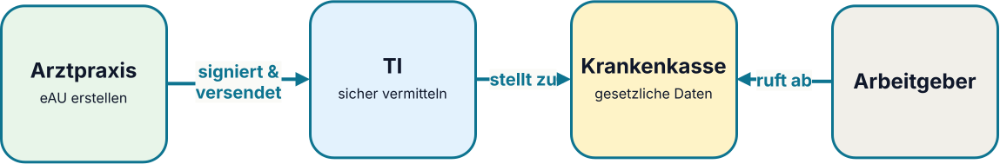
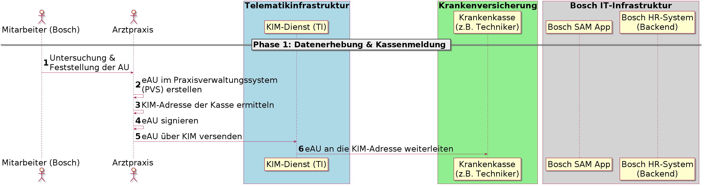
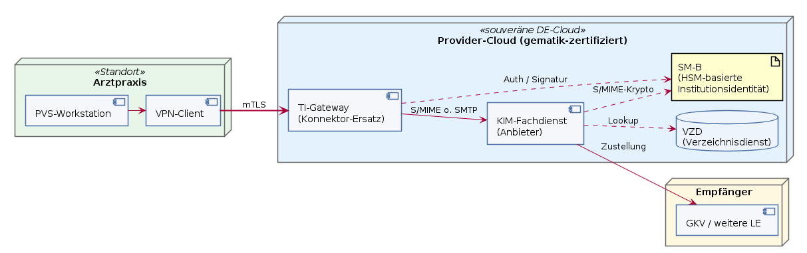

Digitale Gesundheitsplattformen und APIs
Architekturansätze für skalierbare e-Health Vernetzung am Beispiel der Telematikinfrastruktur
Dr. Fabian Franzelin · 2026-09-24
Probevortrag · W2-Professur Informatik · Hochschule Reutlingen
Willkommen zur Vorlesung
Schön, dass ich heute bei Ihnen sein darf.
Was ich heute mitbringe:
- Mich, einen Softwarearchitekten
- Einen Leitfall für die Telematikinfrastruktur 2.0
- Vier Architekturprinzipien
- Einen Architekturansatz zur Skalierbarkeit von e-Health Plattformen
Was Sie mitbringen:
- Sich, motivierte Studierende
- Info 1/2: UML-Sequenzdiagramme
- Medizininformatik: Prozesse
- Neugier auf: Cloud, Container, Zero Trust
Eine Nachricht, fünf Perspektiven
"Ein solches System konnte bisher noch nie gehackt werden." Karl Lauterbach, 2024, Einführung der ePA
- Als CCC: Wie hacke ich das System? 1
- Als Patient: Sind meine Daten sicher?
- Als gematik: Wie reagiert man auf so einen Hack? → TI 2.0
- Als angehende Informatiker: Wie baut man so etwas richtig?
- Als Vortragender heute: Zeigen wir das an einem Alltagsfall — der elektronischen Arbeitsunfähigkeitsbescheinigung (eAU).
Überblick
- Die elektronische Arbeitsunfähigkeitsbescheinigung
- Architekturprinzipien der TI
- Verfügbarkeit & Skalierbarkeit
- Zusammenfassung
Die elektronische Arbeitsunfähigkeitsbescheinigung
- → Die elektronische Arbeitsunfähigkeitsbescheinigung
- Architekturprinzipien der TI
- Verfügbarkeit & Skalierbarkeit
- Zusammenfassung
Was ist die eAU? Ein verteilter Prozess

- Praxissoftware erfasst und signiert die Bescheinigung.
- Die Krankenkasse erhält die für sie bestimmten Daten.2
- Der Arbeitgeber ruft die für ihn erforderlichen Daten ab.
Rollen? Prozesse? → Sequenzdiagramme
Phase 1: Datenerhebung & Kassenmeldung

- Identität vor Zugriff (Arzt)
- Heterogene Primärsysteme (PVS, VZD, KIM)
- Kommunikation über offene Netze
Phase 2: Krankmeldung und eAU-Abruf

- Abruf an Person, Zeitraum und Zweck gebunden
- Asynchrone Übermittlung
- Mehrere Organisationen, eine Fachaufgabe
Von der Beobachtung zum Prinzip
- Beobachtung — Kommunikation über drei Organisationen
- Kernfrage — Wem darf ich bei einer Anfrage vertrauen?
- Prinzip — Zero Trust: Identität statt Netzgrenze
- Beobachtung — Asynchrone Übermittlung, Retry
- Kernfrage — Wie bleibt der Dienst verfügbar?
- Prinzip — Hardware-Abstraktion & Cloud: TI-Gateway zentral
Diese zwei Prinzipien vertiefen wir jetzt.
Architekturprinzipien der TI
- Die elektronische Arbeitsunfähigkeitsbescheinigung
- → Architekturprinzipien der TI
- Verfügbarkeit & Skalierbarkeit
- Zusammenfassung
Prinzip 1: Zero Trust
Zero Trust beschreibt ein aus dem "Assume Breach"-Ansatz entwickeltes Architekturdesign-Paradigma, welches im Kern auf dem Prinzip der minimalen Rechte aller Entitäten in der Gesamtinfrastruktur basiert.3
Das beinhaltet:
- Jeder einzelne Zugriff muss authentifiziert werden
- Jeder einzelne Zugriff muss verschlüsselt werden
- Minimale Datenweitergabe → need-to-know Prinzip
- Die Berechtigungen sind kontextbezogen
Prinzip 2: HW-Abstraktion & Cloud
Die Telematikinfrastruktur der Zukunft soll […] den Konnektor durch zentrale, cloudbasierte Zugangsdienste (TI-Gateway) ablösen und so kurze Update- und Release-Zyklen ermöglichen.4
Das beinhaltet:
- Zentraler Dienst statt Hardware pro Standort (TI-Gateway)
- Rollende Auslieferung: Sicherheits-Patches in Stunden → CI/CD
- Elastische Kapazität als Nebeneffekt
Verfügbarkeit & Skalierbarkeit
- Die elektronische Arbeitsunfähigkeitsbescheinigung
- Architekturprinzipien der TI
- → Verfügbarkeit & Skalierbarkeit
- Zusammenfassung
Schauen wir uns die eAU wieder an…

Im Mittel bei einem Zugriff pro eAU auf einen Arbeitstag (8h)5
Schranken für die Auslegungslast
- eAU: ca. 9 Zugriffe/Sekunde5
- E-Rezept: ca. 152 Verordnungen/Sekunde5
- elektronische Patientenakte: ca. 235 Zugriffe/Sekunde5
| Kennzahl | Wert [Zugriffe/s] | Herleitung |
|---|---|---|
| Peak-Faktor Wochentag/Tageszeit | ×2 | Montag/Vormittag |
| Peak-Faktor Infektwelle | ×2–5 | Grippe-/COVID-Saison |
| Auslegungsbereich (ePA) | ~940–2.350 | Multiplikation Worst-Case |
Die Architektur muss wesentlich mehr tragen als unser Leitfall.
TI-2.0-Deployment: eAU

- Elastisch: mehr TI-Gateways, weniger bei Ruhe → K8s Pods
- Entkoppelt: KIM-Zustellung über Briefkasten → Message Queues
- Aktuell: Updates fließen automatisch ein → CI/CD
- Offene Frage: technisch machbar — aber zertifizierbar?
Zusammenfassung & Ausblick
- Die elektronische Arbeitsunfähigkeitsbescheinigung
- Architekturprinzipien der TI
- Verfügbarkeit & Skalierbarkeit
- → Zusammenfassung
Zusammenfassung
- Digitale Gesundheitsplattform: Viele Rollen, eine Fachaufgabe
- APIs & offene Standards: Vernetzung wird dienstorientiert
- Skalierbarkeit: Von 9 Zugriffen/s (eAU-Mittel) bis ~2.350/s (Peak, ePA-Klasse) — elastisch durch Cloud.
- Telematikinfrastruktur 2.0: Zero Trust statt Netz-Perimeter — Vertrauen an Identität und Kontext gebunden
"Ein solches System konnte bisher noch nie gehackt werden." Zukünftiges Ich
Backup slides
TI vs. Internet — ein Vergleich
| Dimension | Internet | TI 1.x | TI 2.0 (Zielbild) |
|---|---|---|---|
| Grundannahme | Offenes Netz, "assume hostile" | Geschlossenes Netz, Vertrauen durch Abschottung | Offenes Netz, Vertrauen durch Identität (Zero Trust) |
| Zugang | Jeder mit IP-Adresse | Nur über zugelassene Hardware (Konnektor, SMC-B, eHBA) | Digitale Identitäten, TI-Gateway als Dienst |
| Adressierung | DNS, IP, URL | KIM-Adressen, VPN-Tunnel in TI-Netz | Föderierte Identitäten, dienstorientiert |
| Identität | Optional (TLS-Zertifikat, Login je Dienst) | An Karte/Konnektor gebunden (Standort + Hardware) | An Person/Rolle gebunden, kontextbezogen |
| Sicherheit | Ende-zu-Ende auf Anwendungsebene (TLS, OAuth) | Netzwerksegmentierung + kryptographische Karten | Wechselseitige Authentifizierung je Request |
| Governance | IETF/W3C, dezentral, konsensbasiert | gematik, staatlich reguliert, Zulassungspflicht | gematik, offener für Standards (FHIR, OAuth/OIDC) |
| Standards | HTTP, TLS, JSON, OAuth | Eigene TI-Fachdienste + KIM, teils proprietär | HL7 FHIR, OAuth 2.0, OpenID Connect |
| Skalierung | Horizontal, global, CDN | Begrenzt durch Konnektor-Hardware pro Standort | Cloud-fähig, dienstorientiert |
| Ausfallverhalten | Best effort, redundante Pfade | Einzelner Konnektor = Single Point of Failure | Redundante Dienste, Direktkommunikation |
| Datenmodell | Anwendungsspezifisch | FHIR/CDA + Spezifika | FHIR-first |
Kernaussage: TI 1.x drehte das Internet-Paradigma um — Vertrauen durch ein abgeschottetes Parallelnetz mit Hardware-Ankern. TI 2.0 nähert sich wieder dem Internet-Modell an: offenes Netz, aber jede Anfrage wird über Identität, Rolle und Versorgungskontext geprüft. Das Netz ist offen wie das Internet, die Zugriffe sind streng wie in einem Fachnetz.
Q&A
Frage 1
Wie sicher sind meine Gesundheitsdaten in der Telematikinfrastruktur?
Die TI schützt Daten durch starke Identitäten, Verschlüsselung und rollenbasierte Zugriffsrechte. Absolute Sicherheit gibt es nicht: Deshalb müssen Zugriffe bei jeder Anfrage geprüft, protokolliert und auf das erforderliche Minimum begrenzt werden. Genau diesen Wandel von Netzvertrauen zu Zero Trust verfolgt die TI 2.0.
Frage 2
Warum reicht ein geschlossenes Netz nicht aus, um Gesundheitsdaten zu schützen?
Ein geschlossenes Netz schützt vor manchen Angriffen von außen, aber nicht automatisch vor kompromittierter Hardware, gestohlenen Karten oder zu weit gefassten Berechtigungen. Sicherheit muss deshalb an Identität, Rolle, Zweck und Kontext eines einzelnen Zugriffs gebunden sein, nicht nur an den Ort im Netzwerk.
Frage 3
Was ändert sich für Arztpraxen durch die TI 2.0?
Der lokale Konnektor wird schrittweise durch zentrale TI-Gateways ergänzt beziehungsweise ersetzt. Damit können Sicherheitsupdates und neue Funktionen schneller ausgerollt werden. Für Praxen bleibt entscheidend, dass Primärsysteme, Identitäten und Arbeitsabläufe zuverlässig integriert sind.
Frage 4
Warum sind FHIR, OAuth und OpenID Connect für die TI wichtig?
FHIR schafft eine gemeinsame Sprache für medizinische Daten. OAuth 2.0 und OpenID Connect ermöglichen standardisierte Delegation und Anmeldung. Diese offenen Standards erleichtern die sichere Zusammenarbeit unterschiedlicher Hersteller und verringern die Abhängigkeit von proprietären Schnittstellen.
Frage 5
Kann eine cloudbasierte TI überhaupt zuverlässig und zertifizierbar sein?
Ja, wenn Architektur und Betrieb auf Redundanz, automatisierten Tests, kontrollierten Auslieferungen, Monitoring und nachweisbaren Sicherheitsmaßnahmen beruhen. Die Zertifizierung wird dadurch nicht einfacher, kann aber stärker auf überprüfbare Dienste, Schnittstellen und kontinuierliche Nachweise ausgerichtet werden als auf Hardware an jedem Standort.
Frage 6
Wie lassen sich Medizingeräte unterschiedlicher Hersteller sicher vernetzen?
Antwort 6
Gemeinsame Kommunikations- und Datenstandards sind die Grundlage, etwa SDC (IEEE 11073) für die Gerätevernetzung und FHIR für klinische Daten. Darauf bauen eindeutige Identitäten, klar spezifizierte Schnittstellen, Konformitätstests und ein risikobasiertes Sicherheitskonzept auf.
Frage 7
Was kann die Medizintechnik aus der Entwicklung vernetzter Fahrzeuge lernen?
Antwort 7
Beide Domänen verbinden verteilte, heterogene und sicherheitskritische Systeme. Übertragbar sind insbesondere service-orientierte Kommunikation, systematische Tests, nachvollziehbare Entwicklungsprozesse und risikobasierte Absicherung. Medizinische Arbeitsabläufe und regulatorische Vorgaben müssen dabei stets den konkreten Anwendungskontext bestimmen.
Frage 8
Welche Rolle spielen digitale Zwillinge in vernetzten medizinischen Systemen?
Antwort 8
Digitale Zwillinge erlauben, Geräte, Schnittstellen und klinische Prozesse unter kontrollierten Bedingungen zu simulieren. Damit lassen sich Lastspitzen, Kommunikationsfehler und Sicherheitsvorfälle untersuchen, bevor ein System in der Versorgung eingesetzt oder verändert wird. Sie ergänzen reale Tests, ersetzen sie aber nicht.
Frage 9
Wie kann KI in vernetzten Gesundheitssystemen sinnvoll eingesetzt werden?
Antwort 9
KI kann Fachpersonal unterstützen, zum Beispiel bei Fernmonitoring, Priorisierung von Warnsignalen oder individualisierter Begleitung von Patientinnen und Patienten. Sie darf jedoch nicht als autonome Entscheidungsinstanz betrachtet werden: Datenqualität, Transparenz, klinische Validierung, Datenschutz und menschliche Verantwortung bleiben entscheidend.
Frage 10
Was bedeutet digitale Souveränität im Gesundheitswesen?
Antwort 10
Digitale Souveränität bedeutet, dass Institutionen und Gesellschaft Kontrolle über Daten, Schnittstellen, Betriebsmodelle und kritische Abhängigkeiten behalten. Offene Standards, interoperable Systeme, europäische Rechtsräume und überprüfbare Sicherheitsmechanismen schaffen dafür wichtige Voraussetzungen, ohne Innovation oder internationale Kooperation auszuschließen.
Forschungsrichtungen für die HS Reutlingen
Aus solchen Leitfällen ergeben sich praxisnahe Themen für Studium und Forschung:
- Interoperabilitäts- und Konformitätstests für FHIR-Profile,
- digitale Zwillinge zur Untersuchung von Last- und Fehlerszenarien,
- sichere, nachvollziehbare Kommunikation heterogener medizinischer Systeme.